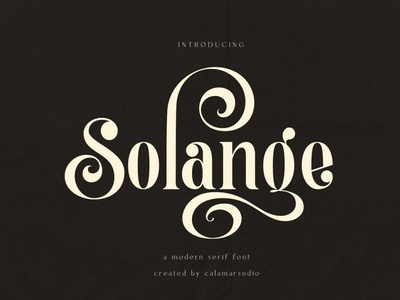

SERIF
While lettering obviously needs to be legible, most of the time it’s going to be a lot larger than body copy in books. So the serifs on hand lettering type are really just pretty flourishes so you can go a bit wilder than typefaces made for print.